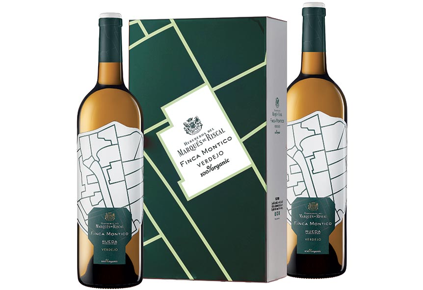
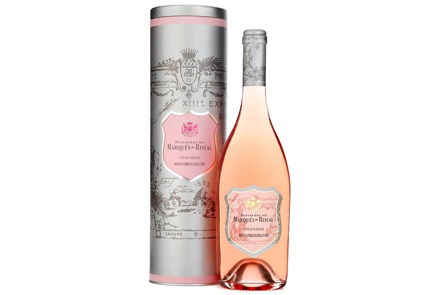

Este, sin duda, es un año para olvidar (o no). Si bien nos hemos enfrentado a una pandemia mundial típica de cualquier película de ciencia ficción, también nos ha servido para valorar los pequeños placeres de la vida. Pasar más tiempo con nuestros seres queridos es algo que, sin duda, ahora tenemos como una prioridad. La Navidad, con precaución, será ese momento en el que volvamos a reunirnos, a disfrutar alrededor de la mesa y, por eso, el menú y su maridaje, este año, es más importante que nunca.
Por eso, te queremos proponer seis vinos de Marqués de Riscal que encajarán como un guante en tu menú. Blancos, rosados o tintos harán de tus cenas la envidia de todos tus comensales.
Finca Montico

Elaborado 100% con variedad Verdejo y con agricultura ecológica, es un vino amarillo verdoso. En nariz tiene un marcado aroma de este varietal con una intensidad media, notas de hinojo, finas hierbas, flores blancas, pera y melocotón. En boca es graso, fresco y con un final largo y redondo. Marida a la perfección con pescados, mariscos, carnes blancas, jamón y carnes frías. Se sirve a una temperatura de entre 8 y 10 grados.
Marqués de Riscal Limousin
100% Verdejo de viñas de más de 40 años, es de color dorado pálido, complejo y elegante. En boca es untuoso, con fondo de lías finas, frutos secos y notas de madera tostada. Marida con pescados al horno como la merluza, lubina o dorada, carnes blancas, cordero asado o verduras a la plancha. La temperatura para servirlo oscila entre 9 y 12 grados.
Marqués de Riscal Viñas Viejas

Este rosado de sangrado natural está elaborado con un 75% de uva Garnacha y un 25 % de Tinta de Toro. En nariz presenta intensos aromas a fresa y frambuesa con algunas notas florales. En boca es fresco y equilibrado con un final de sensaciones ácidas agradables. Marida con pescados, mariscos, sopas navideñas y arroces.
XR de Marqués de Riscal
Este vino es sin duda, un homenaje a los bodegueros que han forjado Marqués de Riscal. Con un color cereza muy cubierto e intenso, en nariz es muy expresivo con notas de regaliz, canela y pimienta negra donde la larga crianza en madera apenas se percibe gracias a su complejidad y concentración de fruta madura. En boca es fresco, con taninos pulidos muy agradables. El final de boca es largo y deja unos leves recuerdos balsámicos de gran calidad. La temperatura ideal para tomarlo oscila entre 16 y 18 grados y marida perfectamente con jamón, quesos no curados, guisos con salsas no muy especiadas o el famoso pavo con ciruelas y pasas al horno típica de estas fechas.
Marqués de Riscal Reserva
Buque insignia de la bodega, está elaborado a partir de uvas procedentes de viñas de la variedad Tempranillo plantadas antes de los años 70. Este exquisito vino ha permanecido 24 meses en crianza barrica americana. Con un color cereza muy cubierto, intenso y con apenas signos de evolución, en nariz es muy expresivo con notas de regaliz, canela y pimienta negra. En boca es fresco, con taninos pulidos muy agradables. El final de boca es largo y deja leves recuerdos balsámicos de gran calidad. Su temperatura ideal de consumo es entre 16 y 18 grados.
Barón de Chirel
Es uno de los vinos de la nueva era de Rioja con un 70% de Tempranillo y un 30% de otras variedades. Color rojo picota, de capa alta y oscura, tiene una potente intensidad aromática donde destacan los tostados y especiados. En boca es fresco y cremoso, con taninos suaves y elegantes con un final largo y equilibrado. Es el perfecto compañero para el cordero de Navidad.
Seis propuestas de Marqués de Riscal que buscan marcar la diferencia en un año donde la clave está en compartir y disfrutar con nuestros seres queridos.
Contenido ofrecido en colaboración con la Marqués de Riscal